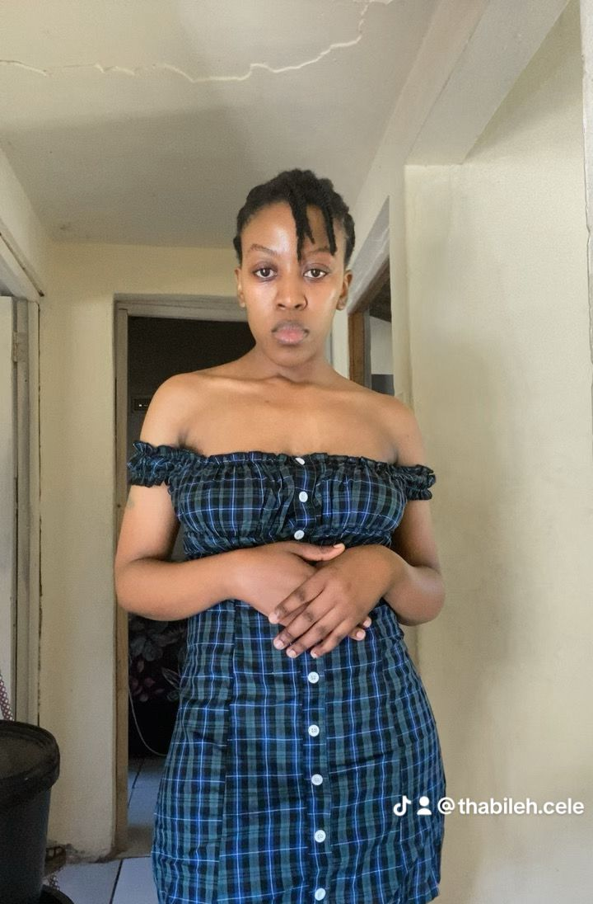

Maid of Honour
Thabile Cele
Our friendship started over a fight for desk space in Grade 8, and to resolve our quarrel our maths teacher forced us to be friends.
Fourteen years later, we have become more than friends and truly become sisters, sharing hardships, dreams, and milestones.
We will once again share an aisle, as she helps me walk toward my forever.